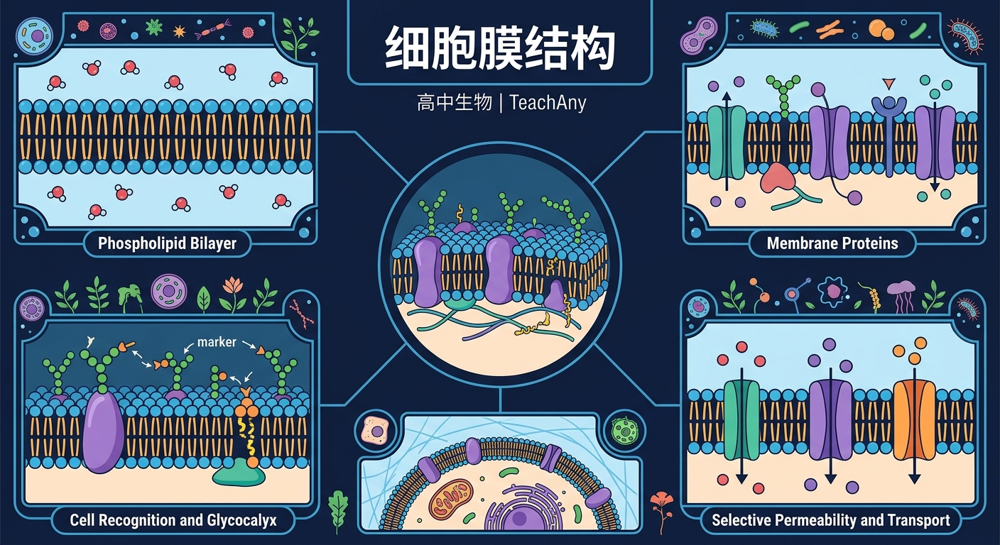
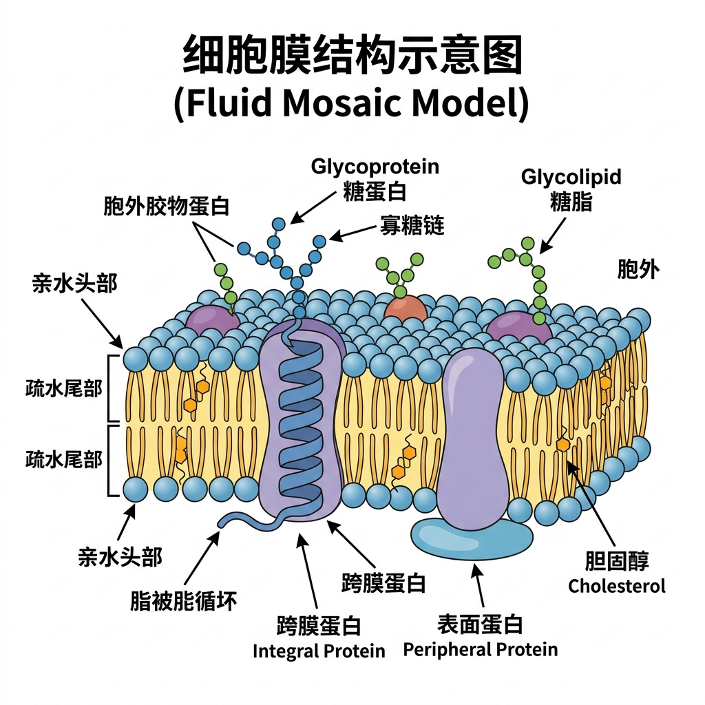
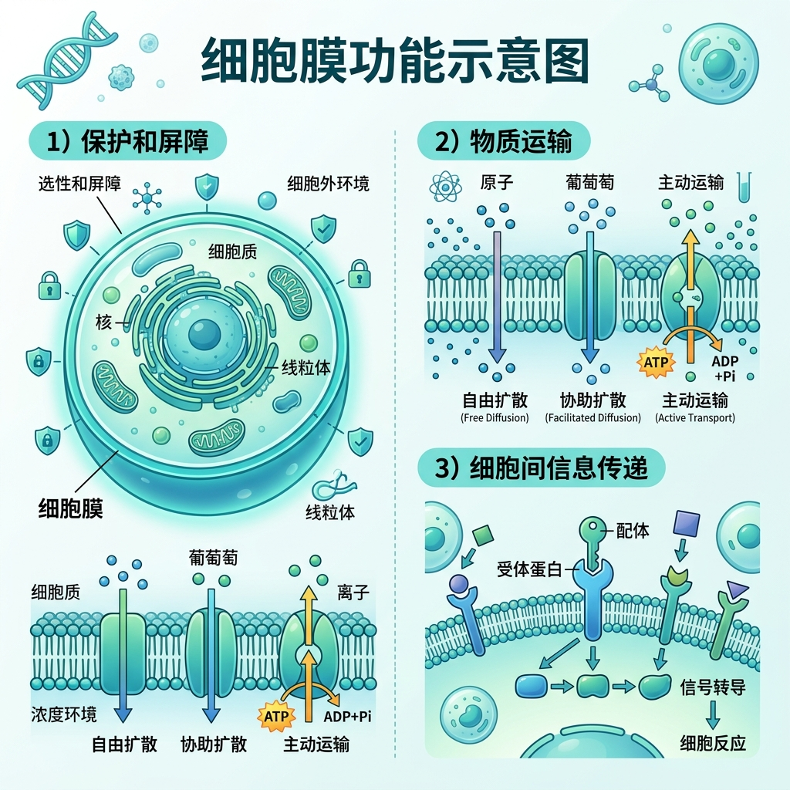

❓ 为啥细胞膜像‘夹心饼干’？
❓ 蛋白质在膜上怎么‘游泳’？
❓ 植物细胞膜和动物细胞膜有啥不一样？
学完这一课，这些问题你都能自信地回答。
完成以下 3 道题，帮助你和我了解你的前置知识状态。答完后系统会自动推荐学习路径。
Q1. 磷脂分子的特点是？
Q2. 蛋白质的单体是？
Q3. 下列哪项不是细胞膜的组成成分？
你的实验室刚分离出了一批细胞膜样品，上司要求你分析细胞膜的化学成分。通过生化分析，你发现了以下成分……

解释镜头：磷脂分子两亲性的原理
在水环境中：
比较镜头：想象一滴油滴入水中——油分子相互聚集，与水分离。磷脂双分子层的形成也遵循同样的热力学原理，但因为磷脂头部亲水，所以不是球形而是平坦的双层膜。
细胞膜的基本骨架是？
如果对磷脂分子还不太清楚，可以用这个类比：
想象磷脂分子是一根棒棒糖🍭：
• 糖果部分（头）= 亲水，喜欢水
• 棍子部分（尾）= 疏水，不喜欢水
两根棒棒糖尾对尾放在一起，就是一个磷脂双分子层！
设计实验探究不同温度下甜菜根细胞膜通透性变化
🎬 细胞膜流动镶嵌模型动画演示（Remotion 渲染）
① 流动性
磷脂分子可以侧向移动，蛋白质分子也可以在膜上漂移。整个细胞膜像液态的油脂，具有流动性。
② 镶嵌性
蛋白质分子以不同方式与磷脂双分子层结合：贯穿整个膜（载体/通道蛋白），或仅附着在膜一侧（外周蛋白）。
③ 不对称性
细胞膜两侧不对称：糖蛋白只分布在细胞外侧（朝外），内侧没有糖蛋白。
④ 整体结构
磷脂双分子层是基本骨架，蛋白质分子镶嵌/贯穿其中，部分蛋白质与糖类结合形成糖蛋白。
Q1. 关于流动镶嵌模型，以下描述正确的是？
Q2. 人鼠细胞融合实验证明了细胞膜的什么特性？
探究：温度会影响细胞膜的流动性吗？低温下，磷脂双分子层的流动性会如何变化？请写出你的假设，并思考实验方案。

细胞膜将细胞的内部与外界环境分隔开，使细胞内部形成一个相对稳定的内环境，保障细胞生命活动的有序进行。
细胞膜对物质的进出具有选择性——有些物质可以自由通过，有些需要帮助，有些则被拒之门外。
点击上方按钮模拟不同的物质跨膜方式
细胞表面的糖蛋白是细胞的"信号天线"，能够识别特定的信号分子（如激素、抗原）。
Q1. 细胞膜的"选择透过性"主要依赖于？
Q2. 糖蛋白分布在细胞膜的哪一侧？它的功能是？（解释题——用自己的话回答）
磷脂双分子层构成基本骨架，蛋白质镶嵌其中
流动性保障物质运输，不对称性实现功能分化
动物膜含胆固醇增加稳定性，植物膜糖类含量更高
荧光标记实验证明膜蛋白的流动性
人工膜技术模拟选择性通透特性
⭐ 基础任务（必做）
用流动镶嵌模型的观点，解释下列现象：
葡萄糖不能自由穿过细胞膜，但可以通过协助扩散进入红细胞。这与细胞膜的什么结构有关？
⭐⭐ 拓展任务（选做）
分析：为什么低温会影响细胞膜的功能？（请从流动镶嵌模型的"流动性"角度解释）
💡 提示：温度→磷脂分子运动→流动性→功能
⭐⭐⭐ 挑战任务（选做）
开放探究：癌细胞表面的糖蛋白异常减少，导致"接触抑制"消失。请从细胞膜功能的角度，阐述糖蛋白异常如何导致癌细胞无限增殖？
量规评价：内容准确 | 证据充分（是否用流动镶嵌模型支撑）| 逻辑清晰 | 术语规范
从下方选择分子类型，点击画布对应位置放置：
当前选中：无（点击上方选择一种分子）
先独立作答，再点选项查看对错与错因。
冰鲜保鲜效果更好的主要原因是
水浸法导致细胞液渗出的直接原因是
最能体现细胞膜选择透过性的结构是
细胞膜的基本支架是____结构，其疏水端朝向____
答案：磷脂双分子层|内侧
磷脂分子亲水头朝外、疏水尾朝内
水分子通过细胞膜的主要方式有____和____两种
答案：自由扩散|水通道蛋白
既有脂溶性扩散又有蛋白通道
完成以下 4 道题，检验你的学习效果。与前测对比，看看自己进步了多少！
Q1. 在一个充满水的环境中，大量磷脂分子会自发形成：
Q2. 关于细胞膜上蛋白质的叙述，正确的是：
Q3. 下列哪种物质的跨膜方式不需要消耗能量也不需要载体蛋白？
Q4. （解释题）请解释：为什么细胞膜具有"选择透过性"？请从流动镶嵌模型的角度分析。
✅ 膜蛋白具有流动性（侧向移动）
💡 忽视‘流动镶嵌模型’动态特性
✅ 糖蛋白参与细胞识别，糖脂主要起稳定作用
💡 未区分膜上糖类分子结构差异
磷脂分子（50%）+ 蛋白质（40%）+ 少量糖类。磷脂是两亲性分子，形成双分子层骨架。
磷脂双分子层具有流动性；蛋白质以不同方式镶嵌其中；糖蛋白只在外侧（不对称性）。
将细胞与外界分隔，维持细胞内环境稳定。
自由扩散（无需蛋白）、协助扩散（需蛋白不耗能）、主动运输（需蛋白耗能）。
糖蛋白（信号受体）参与细胞识别和信号转导，细胞癌变时糖蛋白异常。
结构决定功能——细胞膜的选择透过性由磷脂双分子层的性质和载体蛋白共同决定。
💡 核心记忆锚点
细胞膜 = 磷脂双分子层（骨架）+ 蛋白质（功能执行者）+ 糖蛋白（信息天线）
两大特性：流动性（磷脂 + 蛋白质可移动）+ 选择透过性（载体蛋白决定通行权）
口诀：磷脂打底蛋白游，糖链招手胆固醇守
类比：像小区门禁系统：磷脂是围墙，蛋白质是保安，糖链是门禁卡
建议完整观看一遍，再回看关键步骤。